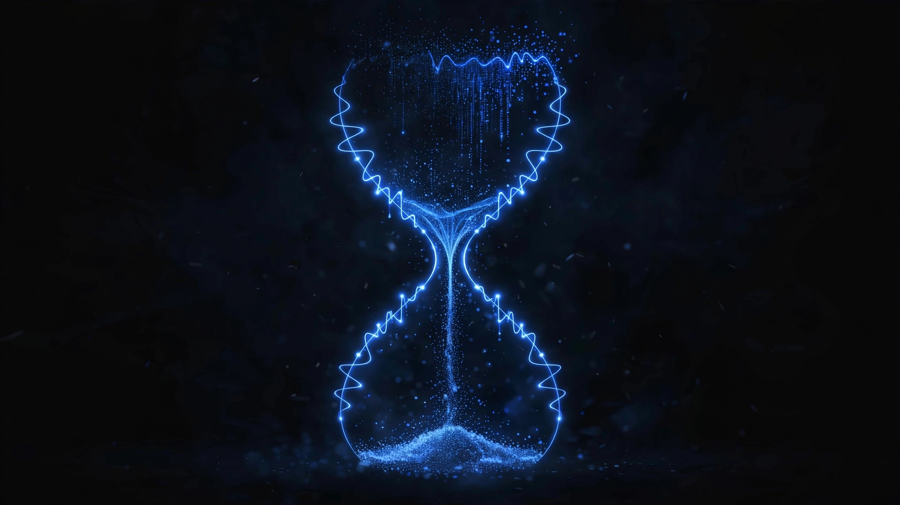

What to Do in the First Hour of a Ransomware Attack

This week alone: a medical college in Illinois, a 600-bed hospital in Barcelona, a hospital system in Hawaii, a medical data company in the US, a community hospital in Ontario, and a hospital in Peru. All disclosed as ransomware victims in the same seven days.
Two of them are worth your attention specifically. Nipigon District Memorial Hospital in Ontario publicly confirmed that files were stolen containing personal and health information of patients, former long-term care residents, job applicants, and volunteers. They detected the intrusion on September 14 and confirmed the data theft on October 1. And in the US, breaches at AngMar Management Services and Clover Health affecting roughly 250,000 patient records were reported to HHS and disclosed this week, after attackers exfiltrated around 700 gigabytes of patient data before encrypting anything.
That last detail is the honest read most plans get wrong.
By the time you see the ransom note, your data is already gone
Every one of this week's cases used double extortion. The attackers steal the data first, then encrypt it. So you are not negotiating to protect your data. That decision was made weeks ago, quietly, on their terms. You are negotiating to get your systems back.
Which means the first hour is about containment, not rescue. Speed matters more than elegance. Here is the checklist, in order.
The first-hour checklist
- Isolate the affected systems now. Pull the network cable, disable the NIC, or quarantine the VLAN. If you cannot disconnect cleanly, power down. Do not wait for a meeting.
- Cut shared drives and shared storage. Ransomware moves sideways through shares. Kill access before it spreads.
- Reset compromised credentials, starting with admin and service accounts.
- Block the attacker's infrastructure at your firewall and proxy: the command-and-control domains and IPs.
- Preserve evidence. Memory dumps, disk images, logs. Do not wipe anything yet. You will need it for the investigation and the breach assessment.
- Assume the data is already out. Bring in legal counsel and start the breach notification assessment now, not after the dust settles.
- Verify your offline and immutable backups are intact before they get encrypted too. The first hour decides whether recovery takes days or weeks.
One of this week's victims got containment right
The UIC College of Medicine case is the contrast worth studying. Some of their systems were knocked offline, but the main network stayed up and patient care at UI Health was never disrupted. The incident was reported to law enforcement and systems were restored.
That is what network segmentation buys you. It is unglamorous, nobody posts about it, and it worked exactly the way it is supposed to.
The HIPAA part you cannot skip
Under HIPAA, a ransomware attack with data exfiltration is presumed to be a breach unless a risk assessment proves otherwise. The Breach Notification Rule requires notifying affected individuals without unreasonable delay and no later than 60 days. Breaches affecting 500 or more people get reported to HHS, plus local media. Report the incident to the FBI as well. It is voluntary, but it is how takedowns happen.
The practices that survive these events are not the ones with the best security products. They are the ones that had the first hour rehearsed before the ransom note arrived.
Start with the one page that matters: my Ransomware Response Sheet. Print it, put it on the wall in the IT office, before you need it.
Want this thinking applied to your practice?
Every practice is different. Tell me what you're dealing with and we'll figure out the right next step together.
Get in Touch